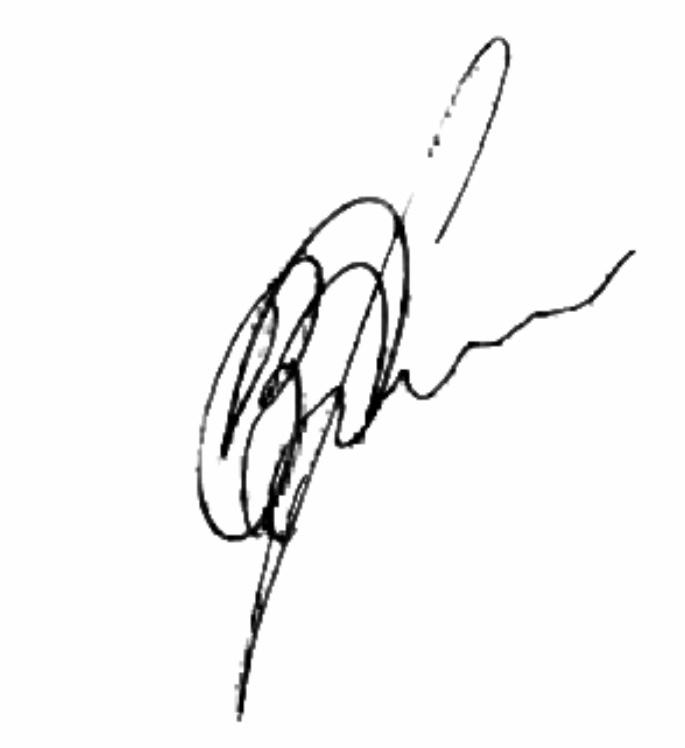

Endoscopic ultrasound-guided fine-needle aspiration (EUS-FNA)
Department of diagnostic and interventional endoscopy
Endoscopic Ultrasound-Guided Fine Needle Aspiration
of the stomach wall (EUS FNA)
Patient: Zherlitsyna, Anastasia Stanislavivna
ID: 110889
Date of birth: Apr 25, 1976
Examination date: Apr 21, 2023
The reason for the examination: the need for a biopsy
Patient: ambulatory.
Video system: Olympus Evis Exera III,
Endoscopic ultrasound system: Olympus EU-C60
Video endoscope: Olympus UCT-160-OL5
Type of disinfection: automatic reprocessor of Olympus OER-A W endoscopes
ASA rating: 2
Type of anesthesia: general. Sedation is performed with the drug propofol
combinations with local anesthesia with lidocaine solution.
Monitoring: ЕКГ, А/T, Ps, Sp02
Anesthesiologist: Ivashchenko K.P.
Endoscopic nurse: Lisovetska S.V.
Conscious consent for anesthesia provision and endoscopic intervention was obtained after explaining to the patient all the risks, possible consequences and results of the specified intervention.
Protocol:
The formation of an irregular shape is determined, next to the antral portion of the stomach, from the side of the back wall and the lesser curvature, close to bean-shaped, measuring 55×32, hypoechoic with anechoic zones up to 10 mm in size.
The border between the formation and the muscle layer of the stomach wall is not determined (the formation grows in or originates from the muscle layer of the stomach wall).
A fine-needle aspiration biopsy was performed - three punctures.
Material for histological and cytological research was obtained.
Conclusion: Paragastric formation extending to the muscular layer of the stomach wall (or originating from it)
Head of the Department of Diagnostic and Interventional Endoscopy Korpyak Vadim Stepanovych |
 |
|---|
If you have suggestions and comments regarding the work of our hospital, please inform us about it by calling the Lisod Hospital Hotline - 0 800 50 51 58 (toll-free from any phone number within Ukraine)